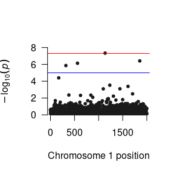

Schematic Depiction of the One-Factor GWAS Model
The One Factor model is a natural extension of univariate genome-wide association study (GWAS).
In standard GWAS analyses, a single phenotype is repeatedly regressed on each single nucleotide polymorphism (SNP) in the users genomic data file (as well as a fixed set of covariates). The One Factor Model in GW-SEM allows users to regress a latent factor on each SNP (as well as a fixed set of covariates). This allows users to explicitly construct a measurement model (i.e., factor analysis) within the GWAS context, and go beyond thinking of phenotypes as directly measured variables or case-control status, opening up a whole array of innovative applications. A general schematic depiction of the one factor model is presented in the figure below, but users should keep in mind that the number of items in the analysis and the specific parameterization of the model can be adjusted to suit the specific research question.
In the Figure below, the latent factor (F1) is the underlying (unmeasured) cause the observed items (xk). The association between the latent factor and the observed indicators are estimated by the factor loadings (λk). The residual variances (δk) indicate the remaining variance in (xk) that is not shared with the latent factor. The regression of the latent factor on the SNP (for all SNPs in the analysis) is depicted by (βk). For a one factor model to be identified, you will need at least three items, but more items will improve the accuracy of the latent variable. While there are statistical tricks that can be used to identify latent variables with two indicators, GW-SEM does not offer ready-made models that incorporate these tricks.
Schematic Depiction of the One-Factor GWAS Model
To demonstrate how to use these function, we use simulated data for a one factor GWAS model with 6,000 individuals consisting of 2,000 SNPs, three correlated items and 6 covariates (that are a proxy for age, sex, ancestry principle components or other confounds). The simulated data are loosely based upon the data used in the demonstration of Pritikin et al (under review). In the paper, we examined the association a latent substance use frequency variable that used tobacco, cannabis, and alcohol as indicators. The latent variable was regressed on each SNP with a minor allele frequency larger than 1%. As we are not allowed to post the raw data online, we simulated similar data that for this demonstration.
The first step is opening R and loading the GW-SEM package into the R computing environment (which will also load all of the dependencies, such as OpenMx), which can be achieved by using the command below:
library(gwsem)
#> Loading required package: OpenMx
#> To take full advantage of multiple cores, use:
#> mxOption(key='Number of Threads', value=parallel::detectCores()) #now
#> Sys.setenv(OMP_NUM_THREADS=parallel::detectCores()) #before library(OpenMx)
#>
#> Attaching package: 'gwsem'
#> The following object is masked from 'package:base':
#>
#> signifThe next step is to load the phenotypic data. This will include any items that define the latent variable or necessary covariates that you will include in the analysis, such as age, sex, or ancestry principle components. Once the phenotypic data has been loaded, it is advisable to make sure the data has been loaded properly. This can be done in a number of ways. For example, you can use the head command to inspect the first few lines of data, look at the means and variances, construct tables of ordinal variables, etc. If your data didn’t load properly, it will likely cause problems for the analysis and for the interpretation of the results.
location <- 'https://jpritikin.github.io/gwsem/gwsemOneFacExample'
phenoData <- read.table(file.path(location, "oneFacphenoData.txt"), header=TRUE)
head(phenoData)
#> tobacco cannabis alcohol pc1 pc2 pc3 pc4
#> 1 3.36379197 1.9456836 2.8611092 0.6581600 -0.1200383 -0.5039244 0.81789068
#> 2 -0.04339055 0.8374107 1.1329506 -0.4456708 1.6999452 0.2989812 -0.01336187
#> 3 2.34493591 1.7822021 1.2619447 -0.5075578 0.5317262 0.8304545 -1.08527994
#> 4 1.94136139 1.4179373 1.0871179 -0.2108447 0.9508879 0.1536526 -1.43699546
#> 5 1.07733966 0.9755835 -1.3167313 0.2835382 -1.6955112 -2.2021556 0.44969009
#> 6 1.63174525 1.0087218 0.7508155 0.4177546 0.3278404 0.2418577 -2.67388373
#> pc5
#> 1 2.34856223
#> 2 -0.67114825
#> 3 0.02086144
#> 4 0.58885216
#> 5 -0.67308854
#> 6 -0.58135826Once the data is loaded into R, you can recode the data, transform it, and tell R if we have ordinal or binary indicators using mxFactor(). The data for this example are simulated and continuous, and therefore, we will not be doing anything now, but if you would like to cut the indicators up into binary or ordinal variables, this would be when you would do it.
After you are satisfied the data is in the appropriate shape we can build a one factor GWAS model with the following command:
# You must tell GW-SEM:
addFac <- buildOneFac(phenoData = phenoData, # what the data object is (which you read in above)
itemNames = c("tobacco", "cannabis", "alcohol"), # what the items of the latent factor are
covariates=c('pc1','pc2','pc3','pc4','pc5'), # what covariates that you want to include in the analysis
fitfun = "WLS") # and the fit function that you would like to use (WLS is much faster than ML)You can take this object (addFac) which is technically an OpenMx model, and simply fit it using mxRun()
addFacFit <- mxRun(addFac)
#> Running OneFac with 27 parameters
summary(addFacFit)
#> Summary of OneFac
#>
#> free parameters:
#> name matrix row col Estimate Std.Error lbound
#> 1 snp_to_F A F snp 0.012380320 0.021250433
#> 2 lambda_tobacco A tobacco F 0.714612262 0.014075870
#> 3 lambda_cannabis A cannabis F 0.716547165 0.013779485
#> 4 lambda_alcohol A alcohol F 0.712599269 0.013767768
#> 5 pc1_to_tobacco A tobacco pc1 0.013550268 0.013241644
#> 6 pc1_to_cannabis A cannabis pc1 0.034179644 0.013424827
#> 7 pc1_to_alcohol A alcohol pc1 0.006571888 0.013216681
#> 8 pc2_to_tobacco A tobacco pc2 0.016575958 0.012944346
#> 9 pc2_to_cannabis A cannabis pc2 -0.012107741 0.012919363
#> 10 pc2_to_alcohol A alcohol pc2 -0.014355555 0.013077380
#> 11 pc3_to_tobacco A tobacco pc3 0.007223531 0.012999019
#> 12 pc3_to_cannabis A cannabis pc3 0.019103939 0.012855554
#> 13 pc3_to_alcohol A alcohol pc3 0.019630346 0.013107011
#> 14 pc4_to_tobacco A tobacco pc4 -0.024735889 0.013343211
#> 15 pc4_to_cannabis A cannabis pc4 -0.021977981 0.013002758
#> 16 pc4_to_alcohol A alcohol pc4 -0.046331492 0.012912552
#> 17 pc5_to_tobacco A tobacco pc5 -0.027682718 0.012946389
#> 18 pc5_to_cannabis A cannabis pc5 0.011462954 0.013150504
#> 19 pc5_to_alcohol A alcohol pc5 -0.017558476 0.013156185
#> 20 snp_res S snp snp 0.492228753 0.012517781 0.001
#> 21 tobacco_res S tobacco tobacco 0.508595911 0.015054512 0.001
#> 22 cannabis_res S cannabis cannabis 0.508292348 0.014730094 0.001
#> 23 alcohol_res S alcohol alcohol 0.509448532 0.014392997 0.001
#> 24 snpMean M 1 snp 0.984830790 0.009059792
#> 25 tobaccoMean M 1 tobacco 0.711102741 0.019888674
#> 26 cannabisMean M 1 cannabis 0.713345286 0.019863550
#> 27 alcoholMean M 1 alcohol 0.712727786 0.019940148
#> ubound
#> 1
#> 2
#> 3
#> 4
#> 5
#> 6
#> 7
#> 8
#> 9
#> 10
#> 11
#> 12
#> 13
#> 14
#> 15
#> 16
#> 17
#> 18
#> 19
#> 20
#> 21
#> 22
#> 23
#> 24
#> 25
#> 26
#> 27
#>
#> Model Statistics:
#> | Parameters | Degrees of Freedom | Fit (r'Wr units)
#> Model: 27 23973 0.1378996
#> Saturated: 14 23986 0.0000000
#> Independence: 8 23992 NA
#> Number of observations/statistics: 6000/24000
#>
#> chi-square: χ² ( df=7 ) = 0.1378996, p = 0.999993
#> CFI: NA
#> TLI: NA (also known as NNFI)
#> RMSEA: 0 *(Non-centrality parameter is negative) [95% CI (0, 0)]
#> Prob(RMSEA <= 0.05): 1
#> To get additional fit indices, see help(mxRefModels)
#> timestamp: 2020-07-10 20:05:09
#> Wall clock time: 0.480583 secs
#> optimizer: SLSQP
#> OpenMx version number: 2.17.4
#> Need help? See help(mxSummary)This is strongly advised, as it is a great time to test whether the model is being specified the way you want it to be and that you are not getting unrealistic estimates.
Provided that the model looks reasonable, you can plug the model that you have built into the GWAS function using the command below:
library(curl)
curl_download(file.path(location, 'example.pgen'),
file.path(tempdir(),'example.pgen'))
curl_download(file.path(location, 'example.pvar'),
file.path(tempdir(),'example.pvar'))
GWAS(model = addFac, # what model object you would like to fit
snpData = file.path(tempdir(), 'example.pgen'), # that path to the snpData file.
out=file.path(tempdir(), "latFac.log"), # the file that you would like to save the full results into
SNP=1:200) # the index of the snps (how many) you would like to fit
#> Running OneFac with 27 parameters
#> Done. See '/tmp/RtmpU3cLV8/latFac.log' for resultsNote about the snpData argument: The path to your snpData will likely include switching to a different directory (as you will likely do your analysis in a different folder than your SNP data). All you need to do is point to the data using relative paths. Further, it is able to take plink bed/bim/fam or pgen/psam/pvar data or bgen data (Oxford format)
Note about the SNP argument: This can be used to run a limited number of SNP (i.e. not the whole snp file). This is particularly useful if you would like to chop up a chr into several parts without cutting you actual genotype data into separate files.
While the GWAS function will take a while and frequently be executed on a computing cluster, it is very useful to run a few SNPs (say 10 or 50) in an interactive session to make sure that: all of your relative file paths to the genotypes are correct, the model is taking a reasonable amount of time (i.e., 1-2 seconds/snp), the SNPs are giving sensible estimates, etc., as the results from a few SNPs can often tell you if there is a problem and that you are running a nonsensical model.
While most computing clusters have unique queue submission systems (and I would strongly advise you to run GWAS on a computing cluster), the R script that you provide will typically be similar to the one below:
library(gwsem)
phenoData <- read.table(file.path(location, "oneFacphenoData.txt"), header=TRUE)
head(phenoData)
#> tobacco cannabis alcohol pc1 pc2 pc3 pc4
#> 1 3.36379197 1.9456836 2.8611092 0.6581600 -0.1200383 -0.5039244 0.81789068
#> 2 -0.04339055 0.8374107 1.1329506 -0.4456708 1.6999452 0.2989812 -0.01336187
#> 3 2.34493591 1.7822021 1.2619447 -0.5075578 0.5317262 0.8304545 -1.08527994
#> 4 1.94136139 1.4179373 1.0871179 -0.2108447 0.9508879 0.1536526 -1.43699546
#> 5 1.07733966 0.9755835 -1.3167313 0.2835382 -1.6955112 -2.2021556 0.44969009
#> 6 1.63174525 1.0087218 0.7508155 0.4177546 0.3278404 0.2418577 -2.67388373
#> pc5
#> 1 2.34856223
#> 2 -0.67114825
#> 3 0.02086144
#> 4 0.58885216
#> 5 -0.67308854
#> 6 -0.58135826
addFac <- buildOneFac(phenoData = phenoData, # what the data object is (which you read in above)
itemNames = c("tobacco", "cannabis", "alcohol"), # what the items of the latent factor are
covariates=c('pc1','pc2','pc3','pc4','pc5'), # what covariates that you want to include in the analysis
fitfun = "WLS") # and the fit function that you would like to use (WLS is much faster than ML)
GWAS(model = addFac, # what model object you would like to fit
snpData = file.path(tempdir(), 'example.pgen'), # that path to the snpData file.
out=file.path(tempdir(), "latFac.log")) # the file that you would like to save the full results
#> Running OneFac with 27 parameters
#> Done. See '/tmp/RtmpU3cLV8/latFac.log' for resultsThe next step is to read the results into R. The output from the GWAS function contains all of the estimates and standard errors for all parameters in the model (for each SNP), as well as other general model fitting information. While you are unlikely to want to read all of this output into R, it is useful to do this on a small test GWAS analysis to ensure that you are getting reasonable results and to familiarize yourself with what information is available, in case you need to explore a specific parameter or model in more detail. This can be done using the command below:
More likely, you are going to want to read the results into R for SNP regression coefficients. This function takes takes two arguments: the path to the data and the column in the results file for the parameter that you want to examine.
succinct <- loadResults(path = file.path(tempdir(), "latFac.log"), focus = "snp_to_F")
succinct <- signif(succinct, focus="snp_to_F")We can then construct a Manhattan plot using the GW-SEM plot() function.

The loadResults() function formats the summary statistics from the analyses so that the data object can be seamlessly used by qqman, LDhub, and other post GWAS processing software.
Before running any sort of analysis in GW-SEM, users should have an understanding of the phenotypic relationships between the traits that you are interested in examining. Specifically, for the one-factor model, the items that load onto the latent variable should be established prior to running the GWAS, or the user risks conducting an analysis that does not test their intended hypothesis. For example, if the structure of the latent factor differs from the model written in GW-SEM (model misspecification), any conclusions that are drawn from the analysis are questionable. Alternatively, if there are items that do not load onto the latent factor, this may dilute the GWAS signal. The best, and most interpretable, results will come from a clearly defined, well specified, phenotypic model.